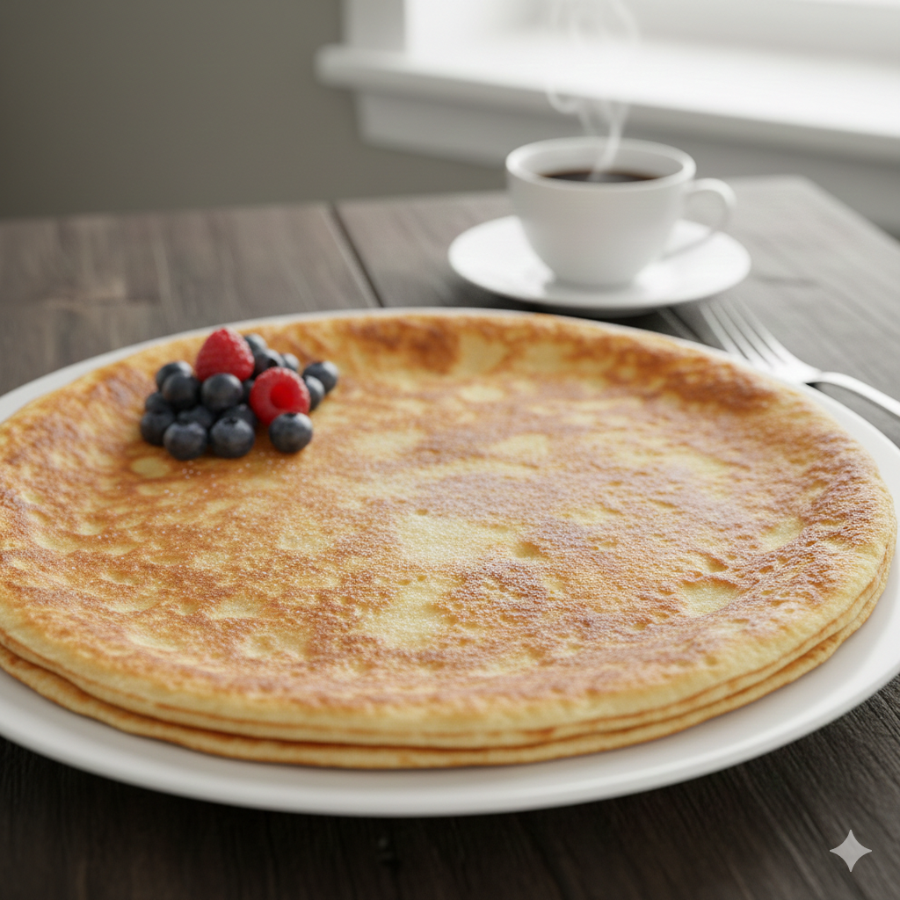

The Perfect Pancake
Home

Description
These pancakes are an absolute classic: they always turn out great, are wonderfully fluffy,
and taste delicious whether served sweet or savory. The secret lies in letting the batter
rest so the ingredients can bond perfectly. A simple base recipe that belongs in
every kitchen.
Ingredients
- 200 g Flour
- 375 ml Milk
- 3 Eggs
- 1 Pinch of Salt
- Butter (for frying)
Steps
- Put the flour in a bowl and gradually stir in the milk until you have a smooth batter.
- Add the eggs and the pinch of salt and whisk the batter briefly until it is uniform and smooth.
- Heat some fat in a coated pan.
- Pour a ladle of batter into the center of the pan and swirl the pan until the bottom is thinly covered.
- Fry the pancake until golden brown on one side, then flip it with a spatula and finish the second side.
- Repeat the process until the remaining batter is used up.
- Tip: Keep the finished pancakes warm in the oven.